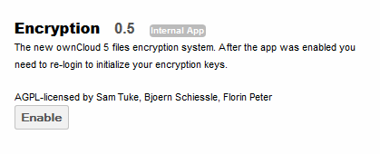
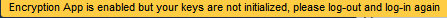
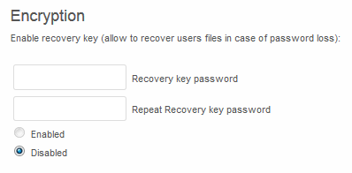
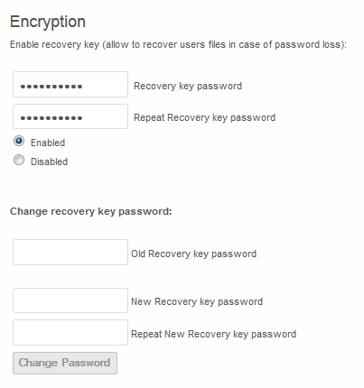
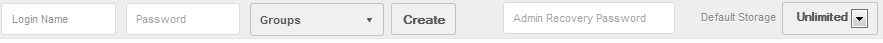

Configuration¶
To enable the encryption app, navigate to the Apps page and select Encryption, then enable.

Once the app is enabled, the following message will appear for all users currently logged into the web browser as they navigate to a new page within the ownCloud web browser

It is necessary to logout of ownCloud and re-login to initialize the encryption keys.
Recovery Key¶
Enabling the recovery key globally is done by the admin. Each user then has the option as to whether they wish to do so for their own account. If enabled, the admin will be able to reset the user’s encryption password using a predefined recovery password. This allows for the recovery of a user’s files in the event of a password loss. If recovery key is not enabled, there is no way to restore files if the login password is lost.
Admin level¶
To enable the recovery key, the Admin must first enable this feature in the Admin page.

Once enabled, the Admin may change the recovery key password at any time.

Recovery¶
In order for the admin to recover the user’s files in the event of a lost password, the admin should navigate to the “Users” tab and enter the Recovery Key Password into the “Admin Recovery Password” field at the top of the page.

This will allow the admin to generate a new encryption password for the user.
- For local user management, this will generate both a new log-in password as well as a new encryption password for the data.
- If LDAP authentication is in use, the admin would need to set the new log-in password in the LDAP server, and then enter the same password in the user management page for the encryption key. It is important that both the password in the LDAP server and the password entered in the user management page are identical.